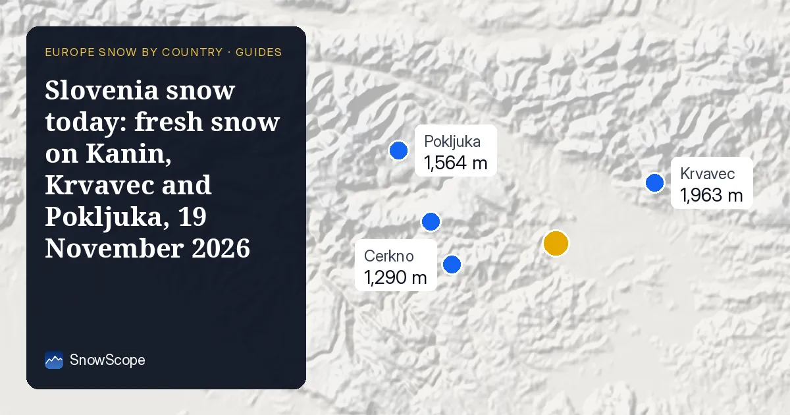
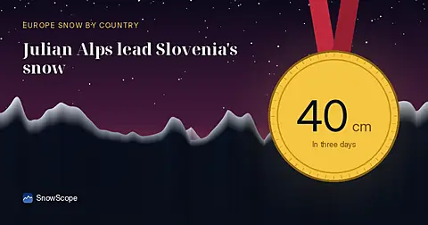

Slovenia snow today: fresh snow on Kanin, Krvavec and Pokljuka, 19 November 2026
Thursday 19 November is the snowiest day in Slovenia's mountains since last weekend. The upper slopes of Kanin, on the border with Italy, pick up about 37 cm today, Krvavec 21 cm, Pokljuka 18 cm and Vogel 12 cm. It lands on what was left of the snow of 13 November, so 14 of Slovenia's 19 higher ski areas are white today, and six of them have 10 cm or more on the ground.
See the live snow forecast for Slovenia in the SnowScope appSnow depth, powder alerts and the 3D map, free.
Where the snow is deepest today
Kanin leads by a wide margin, with 28 cm on its upper slopes below the top lift at 2,137 m. Kranjska Gora has 20 cm on its higher runs, 9 cm of it fresh today. Vogel, above Lake Bohinj with lifts to 1,731 m, has 16 cm. On Pohorje, Kope still holds 14 cm, mostly from last weekend. Pokljuka has 13 cm and Krvavec, the big ski area above Ljubljana airport, 10 cm at the top, nearly all of it new.
Further east the cover is thin: Velika planina and Rogla have 5 cm each, Mariborsko Pohorje 3 cm. The lower ski hills that were white last weekend, Gače, Sviščaki and Trije Kralji, are bare again.

How the week went
A week ago, on 12 November, Slovenia's ski mountains were close to bare: Vogel had 1 cm on its upper slopes, Krvavec and Kranjska Gora none. Then the snowfall of Friday 13 November reached almost every range. By Saturday 14 November Vogel had 30 cm, Rogla and Velika planina 19 cm, Golte 18 cm and Soriška planina 17 cm. Even Gače, whose lifts only climb to 964 m, had 38 cm. Kope peaked on Sunday 15 November with 29 cm and Mariborsko Pohorje with 13 cm. That Sunday, 16 of the 19 ski areas were white.
Milder days followed. By Wednesday 18 November Vogel was down to 19 cm, Rogla and Velika planina to 6 cm, and Gače and Sviščaki were bare. Today's snow puts the high Julian Alps back in front.
What the high stations measured
The weather station at Kredarica, at 2,515 m below the summit of Triglav, measured 30 cm of snow every morning from 14 to 19 November: up there, winter has settled in. Lower down the story changes. The station at Vojsko, at 1,067 m above Idrija, had 10 cm on 14 November and 8 cm on 15 November, then bare ground from 16 November. Rateče, at 864 m near Kranjska Gora, and Ljubljana stayed snow-free all week.
So the snow you see on the slopes is mountain snow. Villages and valleys are still green, which matters if you are driving up or hoping to cross-country ski at low height.
Compared with past winters
At Kanin's middle height, around 1,622 m, there are 19 cm today. In past winters the typical depth there on 19 November was only 2 cm, and only one winter in four had more than 10 cm. Pokljuka at 1,413 m has 5 cm, against a typical 2 cm; Vogel at 1,152 m has 3 cm, against 1 cm; Krvavec at 1,718 m has 2 cm, where bare ground is typical for the date.
Kranjska Gora is the exception: its middle height, at 1,188 m, is bare today, while a typical year has about 2 cm there. In short, the high Julian Alps are ahead of the usual calendar, the middle of the mountains is about normal, and the lower slopes are where they usually are in mid-November.
The next days
Friday 20 and Saturday 21 November are dry in all forecasts, which gives the new snow time to settle. The next snowy day is Sunday 22 November, mainly in the west: Kranjska Gora 7 to 13 cm on its upper slopes, with 10 cm in the middle forecast; Vogel 4 to 15 cm, middle 6 cm; Pokljuka 1 to 12 cm, middle 5 cm; Krvavec 0 to 5 cm, middle 4 cm.
The east waits until Thursday 26 November, when Mariborsko Pohorje could get 0 to 7 cm (middle 4 cm) and Rogla about 3 cm. Over the whole week from 20 to 26 November the middle forecast gives about 12 cm for Kranjska Gora (8 to 15 cm), 7 cm for Vogel (5 to 17 cm) and Mariborsko Pohorje (0 to 10 cm), 6 cm for Pokljuka, 5 cm for Rogla and 4 cm for Krvavec.
Planning a first ski day
Fresh snow on the upper slopes does not mean the lifts are turning. Slovenian ski areas open when they have a solid base, often with their own snow on the main runs, so check each resort's own channels before you go. For natural snow, Kanin and Vogel are the best bets right now, with Kranjska Gora and Pokljuka next.
Ski touring is tempting after a day like today, but the new snow lies on a thin, uneven old cover and on grass: stay on gentle terrain. To the south, Croatia's mountains are bare again after last weekend, and Bosnia and Herzegovina is waiting for snow later next week.
Tips for skiers
- Today's snow is mountain snow: Kanin, Kranjska Gora, Vogel, Pokljuka and Krvavec are white, valleys are green.
- Next snowy day: Sunday 22 November, mostly the Julian Alps.
- Check each ski area's own channels for opening news.
More maps (external sites)
About these numbers
Snow on the slopes: the upper slopes of each ski area on SnowScope's daily snow map. Measured snow: weather stations, read at 07:00 local time. Coming snow: the lowest, middle and highest forecast for each resort's top lift.
Cite this report
For research, teaching or the press: the numbers and charts are free to reuse under CC BY 4.0 with this citation.
SnowScope (2026), Slovenia snow today: fresh snow on Kanin, Krvavec and Pokljuka, 19 November 2026, https://snowscope.app/blog/en/2026/11/slovenia-fresh-snow-kanin-krvavec-pokljuka-19-november-2026.html, accessed 2026-11-19
SnowScope (Atlas Labs). (2026, November 19). Slovenia snow today: fresh snow on Kanin, Krvavec and Pokljuka, 19 November 2026. SnowScope snow reports. https://snowscope.app/blog/en/2026/11/slovenia-fresh-snow-kanin-krvavec-pokljuka-19-november-2026.html
BibTeX
@misc{snowscope2026sloveniafreshsnowkaninkr,
author = {{SnowScope (Atlas Labs)}},
title = {Slovenia snow today: fresh snow on Kanin, Krvavec and Pokljuka, 19 November 2026},
year = {2026},
month = nov,
howpublished = {\url{https://snowscope.app/blog/en/2026/11/slovenia-fresh-snow-kanin-krvavec-pokljuka-19-november-2026.html}},
note = {Published 2026-11-19 15:49 UTC; accessed 2026-11-19}
}· CC BY 4.0 · Methods, data and tools →
Follow Slovenia
Free: a message when fresh snow is coming, and the forecast every morning.
More snow reports

Slovenia faces major snowfall over the next 7 days, with up to 53 cm expected. The heaviest falls arrive on 26 November. Data from 21 November.

Slovenia's mountains gained 1880 km² of snow cover in three days. The Julian Alps saw the most fall, with 40 cm, while lower ranges stayed dry.

Mild weather erased nearly 490 km² of snow cover across Slovakia on 18 November. The High Tatras still hold 17 cm of new snow from the past 72 hours.